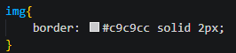

CSS
O que é CSS?
CSS (Cascading Style Sheets) é uma linguagem de estilo utilizada para controlar a apresentação e o
layout de
documentos HTML e XML.
Ela permite definir como os elementos HTML devem ser exibidos em termos de cores, fontes, espaçamento,
posicionamento e outros aspectos visuais.
O CSS separa a estrutura do conteúdo (HTML) da sua aparência visual, facilitando a criação de designs
flexíveis
e consistentes para páginas da web.
Estrutura:
seletor{
propriedade: valor;
propriedade: valor;
}
Onde o seletor é o alvo da regra, e a propriedade e o valor fazem parte da declaração dessa regra.
Exemplos:
Aqui estão alguns exemplos de CSS nessa página:

A propriedade "border" dá uma borda a essa imagem.

A propriedade "margin" cria um espaçamento entre um conteúdo e outro, ou entre um conteúdo e o resto da página.
A propriedade "background-color" cria uma cor de fundo ao conteúdo, sendo usado agora nesse texto em que você está lendo.